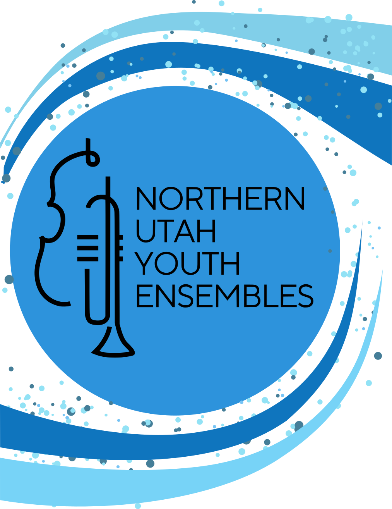
Spring Concert
Ridgeline HS
7:00 pm May 11, 2026
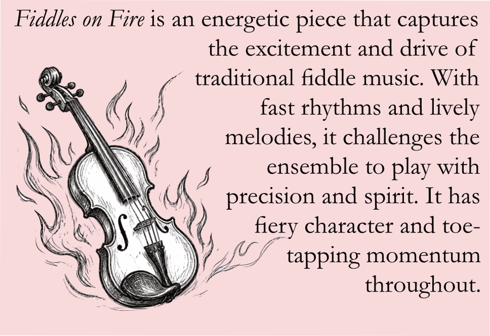
Renaissance Canzona is a piece originally written during the Renaissance. It reflects the elegant and balanced style of early instrumental music. The contrasting sections highlight different voices within the orchestra creating a rich texture. This piece helps our students learn about fugues and other important Renaissance aspects.
Cripple Creek is a beloved American folk tune and has been played and passed down for generations. This arrangement features playful rhythms and a catchy melody that showcases the fun and storytelling of folk music. It's a lively piece that gives a glimpse into early American musical traditions.
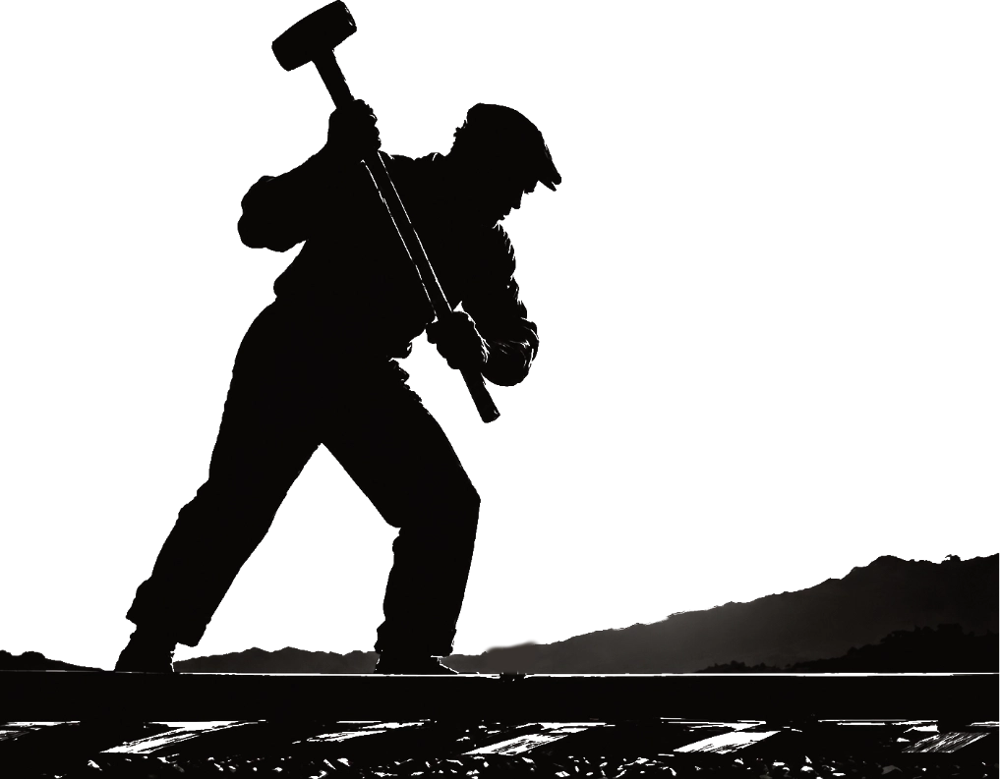
John Henry is a piece based on the legendary American folk hero. This piece tells the story of John Henry's strength and determination. Driving rhythms and bold melodies reflect the intensity of the famous steel driving contest. The music captures both the power and humanity of this iconic tale.
Perpetual Fiddle Motion lives up to its name with continuous motion and flowing energy from start to finish. Inspired by fiddle styles, it features repeating patterns that pass between sections of the orchestra. The result is a vibrant and engaging work that keeps both the performers and listeners on their toes.
NUYCO will appear again in collaboration with NUYS. Watch for them at the end of the program!
Robert Sheldon created a rhythmic driven and fast paced celebratory overture. The perfect addition to our 250 year celebrations!
This high-energy rhythmic work uses meter changes, syncopation, dotted quarter notes, and tied rhythms to create excitement. Excellent use of unison scoring reinforces the rhythms and adds power to the sound. Other effects such as horn rips and handclaps add an extra layer of color.
This exciting and emotionally powerful music from the DreamWorks film has taken on a life of its own. Here is an adaptation for bands that features the well-known tender lyricism as well as the dramatic heroic moments of the original score.
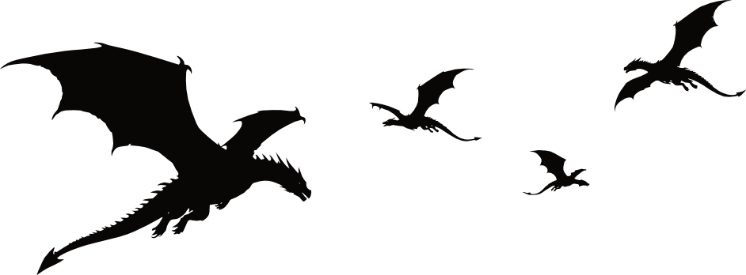
Gabriel Hurd, NUYS's trumpet player and sometimes Wind Ensemble percussionist, volunteered to compose this piece that features polyrhythms and interweaving melodies.
"I wrote this piece because I always thought percussion was really cool. I had never composed anything with percussion before, and I thought it would be fun! As you can probably guess by the name, the piece is supposed to represeent an epic final battle and the internal struggle that comes with it. I hope you like it!"
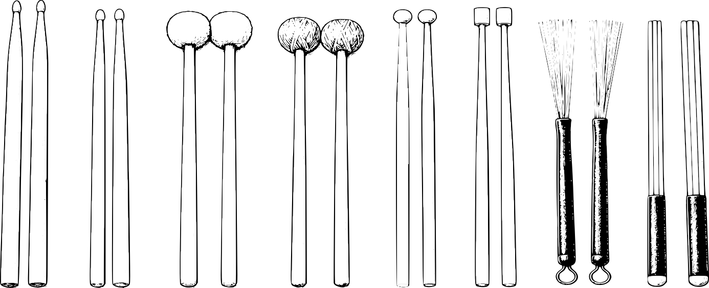
American Salute
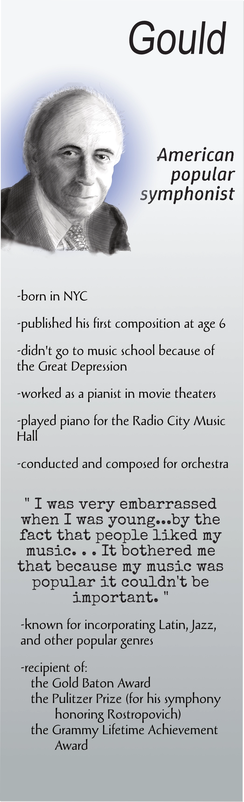
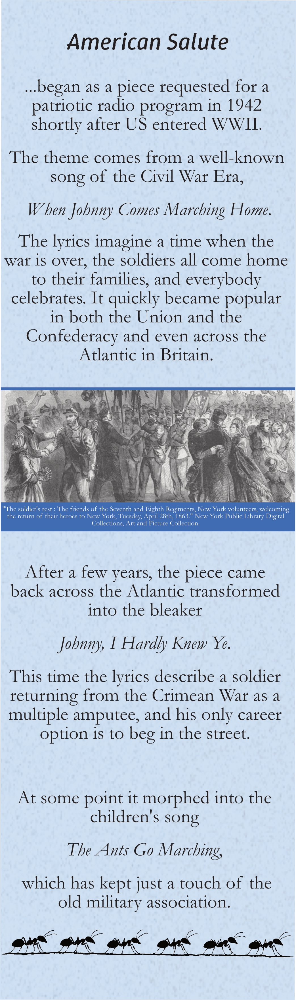
Variations on a Rococo Theme
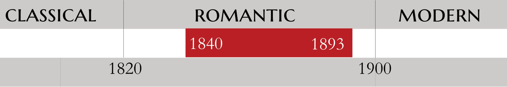
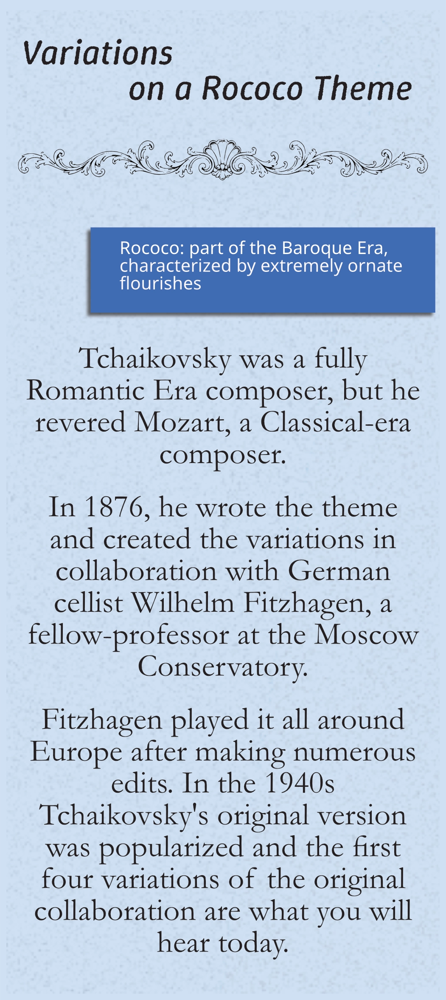
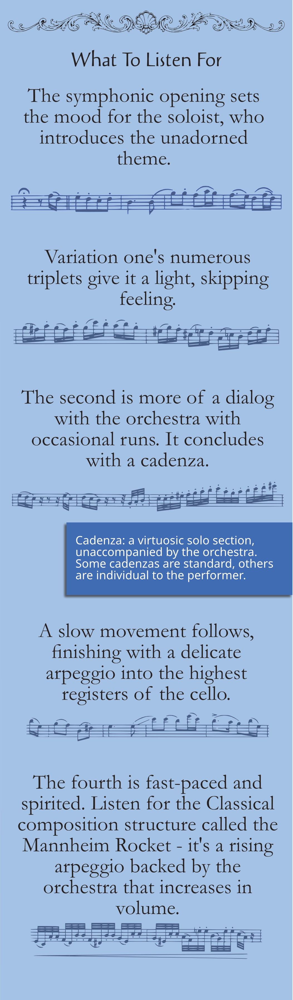
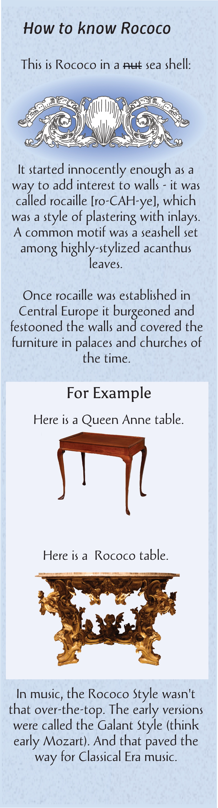
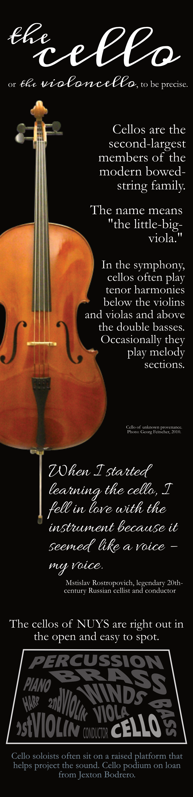
Variations on a Shaker Melody from Appalachian Spring
Hoe-Down from Rodeo
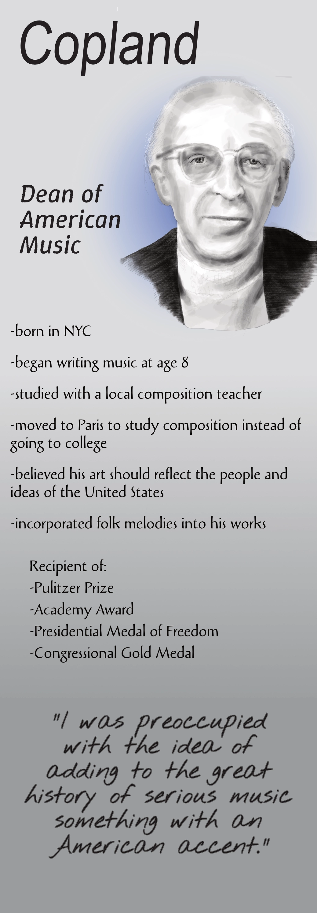
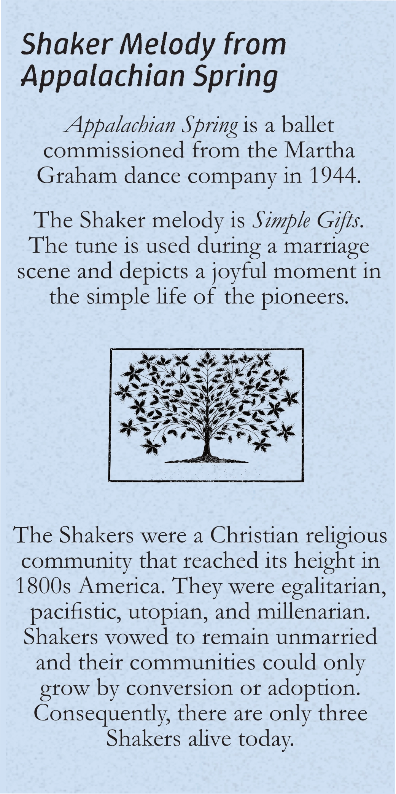
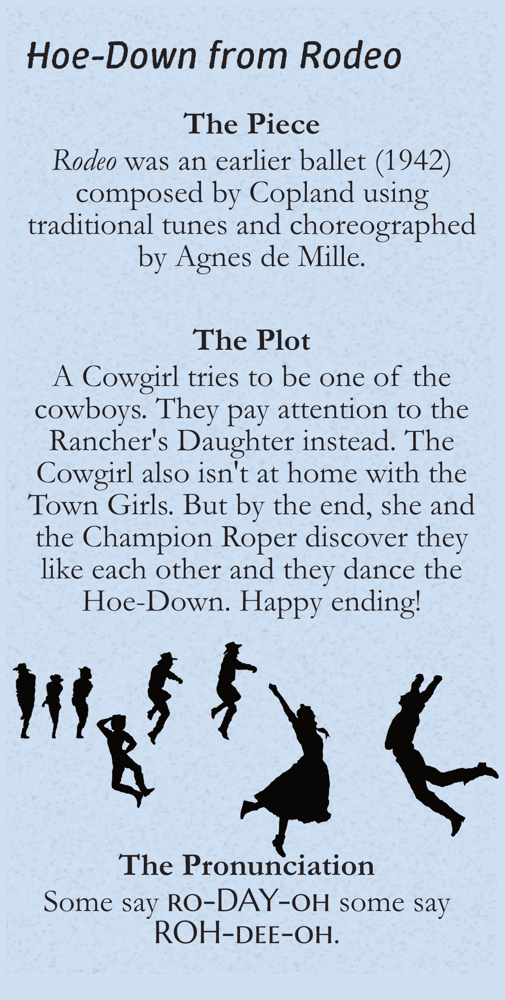
Stars and Stripes Forever in collaboration with NUYCO
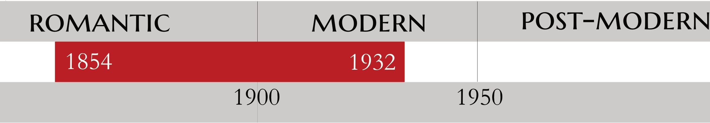
march of the United States of America.
(By order of Congress, December 11, 1987.)
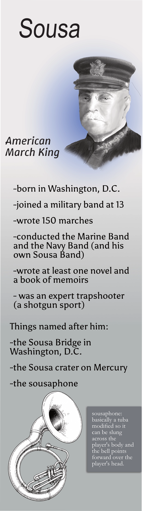
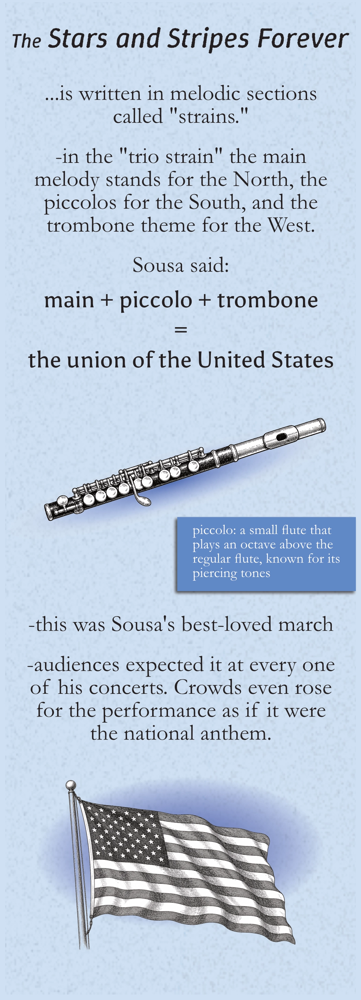
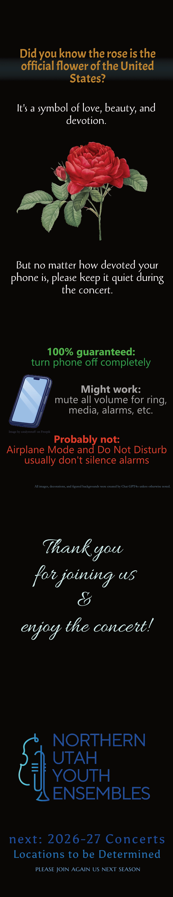